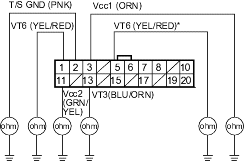

- Substitute a known-good EPS control unit, and connect the all disconnected connectors.
- Start the engine.
Does the EPS indicator come on?
YES - Go to step 13.
NO - Check for loose EPS control unit connectors. If necessary, replace the EPS control unit and retest. 
- Stop the engine, and verify the DTC.
Is DTC12 indicated?
YES - Check for loose torque sensor connectors. If necessary, substitute a known-good steering gearbox and recheck.
NO - Perform the appropriate troubleshooting for the code indicated.
NOTE: Information marked with an asterisk (*) applies to KU model.
- Clear the DTC.
- Start the engine.
- Wait at least 10 seconds.
Does the EPS indicator come on?
YES - Go to step 4.
NO - The system is OK at this time.
- Stop the engine, and verify the DTC.
Is DTC16 indicated?
YES - Go to step 5.
NO - Perform the appropriate troubleshooting for the code indicated.
- Make sure the ignition switch is OFF, then disconnect the EPS control unit connector C (20P) and the torque sensor 6P connector.
- Check for continuity between the appropriate EPS control unit connector C (20P) terminal and body ground (see table).
Terminal name EPS control unit connector C terminal No. Vcc1 3 Vcc2 11 VT3 13 VT6 1 (5)* T/S GND 2
EPS CONTROL UNIT CONNECTOR C (20P)

Is there continuity?
YES - Repair short to body ground in the appropriate sensor circuit between the torque sensor and EPS control unit.
NO - Go to step 7.